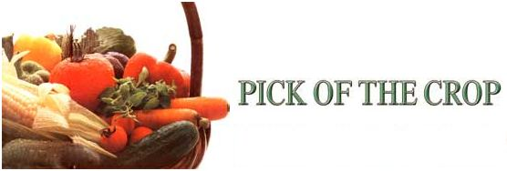

A roundup of the best vegetable varieties for '87.
Strange...that's the only word I can think of to characterize the growing conditions here in Kentucky last year. Instead of a season we had a series miniseasons, a kind of climatic obstacle course that included a hard frost (22°F!)- in mid-April, a soil-parching mid-summer drought (from which some southern farmers may never recover), and (ironically) torrential rains late in the season. Still-despite the whimsical weather-I managed to nurture several hundred new vegetable varieties in my trial gardens. Here are the results: the easiest to grow, the most productive, the tastiest, the hardiest-my candidates for Crops Most Likely to Succeed in your ,garden in 1987.
Lettuce
At the top of the lettuce list-and one of the finest new looseleafs to come along in many a year-is Tango, an introduction from W. Atlee Burpee Seed Co. (Warminster, PA 18974) that produces tangy, dark green, endivelike leaves in just 45 days. Tango simply dances circles around the competition. Also, for sheer beauty as well as good flavor, you'll want to try Lollo Rossa, a European type from Shepherd's Seeds (7389 W. Zayante Rd., Felton, CA 95018) that yields lovely, deeply crinkled, dark crimson leaves in 56 days.
Among the butterhead lettuces, Ben Semen from Gleckler's Seedsmen (Metamora, OH 43540) is a standout-it produces a large head and delicious leaves even in warm weather when others fail. Anuenue from Johnny's Selected Seeds (Albion, ME 04910) and Reine Des Glaces from Le Marche (P.O. Box 566, Dixon, CA 95620) are superb Batavian head lettuces. Anuenue thrives in most any season, and the Le Marche variety has gorgeous, lacy leaves. Three new iceberg types deserve your attention, too: the redleaved Rosa from Geo. W. Park Seed Co.
(Greenwood, SC 29647) . . . the crisp, sweet, superproductive Wallop from Thompson and Morgan (T and M, P.O. Box 1308, Jackson, NJ 08527) . . . and the tasty, fast yielding Queen Crown from Vesey Seed (P.O. Box 9000, Houlton, ME 04730). All three thrive in cool weather and can be planted very early' in the season.
Last, those of you who favor cos (or romaine) lettuce will love Craquerelle Du Midi from The Cook's Garden (P.O. Box 65, Londonderry, VT 05148). This one is an excellent choice for gardeners in warm climates.
I like to sow radish seeds right along with my lettuce, and you can bet this year I'll again include Flamavil from Johnny's in my salad patch. The long, supercrunchy root matures in a mere 27 days and resists pithiness like no other. I also like T and M's extra-long (four-inch) radish, dubbed Rave D'Amiens. It's slower-growing than many but well worth the wait. And don't overlook the exquisite Green Meat, a three-incher from Le Marche that's green at the top, white at the bottom, and delicious through and through. I also recommend Crystal
White, a disease-resistant, pure white variety from Harris Moran Seed Co. (Rochester, NY 14624) that produces tasty four-inch roots in just 30 days. A more traditional roundtype radish is Scarlet Knight from the Holmes Seed Co. (2125 46th St. N. W., Canton, OH 44709). Bright red, early maturing, resistant to yellows (a common radish disease), and truly delicious, it outjousts even its royal predecessor, Red Prince.
The top choice for spinach this year is a versatile smooth-leaf hybrid called Olympia, from Ed Hume (P.O. Box 1450, Kent, WA 98032). It's delicious whether you eat it raw in a salad or cooked-and you'll probably do plenty of both, since it thrives from spring to fall. Another excellent new spinach is Hybrid 612, a highly disease-resistant curly, or savoy, type that is being offered by Meyer Seed Co. (600 S. Caroline St., Baltimore, MD 21231).
One of the best new varieties of greens for 1987 is an unusual Dutch development called Tyfon, available from Midwest Seed Growers (505 Walnut St., Kansas City, MO 64106). Tyfon is a cross between Chinese
cabbage and turnips. It's winter-hardy, yet resists bolting in hot weather, producing large, green, mild-tasting leaves nearly year-round. Another unusual variety is Le Marches Giant Red Mustard, a Japanese savoy that produces beautiful red leaves (they turn green when cooked). And Bau Sin from Gleckler's is a dwarf plant that yields short, wide, thick petals for frying, cooking, or pickling. Finally, there's one good new variety for kale lovers: Premier from Hastings Seeds (P.O. Box 4274, Atlanta, GA 30302) is superproductive in both spring and fall.
Des Vertus Marteau, an early-maturing, half-long French type offered by Cook's Garden, is my top-rated turnip for '87. The four- to six-inch roots aren't especially attractive, but they're tasty as can be. (As the old-timers around here might say, "It's ugly, but it ain't bad eatin'. ") And incidentally, if your climate provides cool springs and long autumns, I hope you'll try growing rutabagas this year. This close cousin of the turnip, popular in Europe and Canada, deserves more attention from American gardeners. Fortune from Gaze Seed (P.O. Box 640, St. Johns, Newfoundland A 1C 5K8) is an excellent choice.
One of the best new onion varieties to come along in years is Super Apollo from Twilley Seeds (P.O. Box 65, Trevose, PA 19047). This medium-sized, long-storage onion matures early and produces beautiful dark bronze bulbs. Another exceptional keeper-this one from Canada-is Simcoe, a particularly pungent offering from Lindenberg Seeds (803 Princess Ave., Brandon, Manitoba R7A OP5).
If you want a really early crop of peas, try Extra Early Alaska from Wyatt-Quarles (P.O. Box 739, Garner, NC 27529). Resistant to wilt, this one goes through anything from blizzard to drought to produce huge harvests. Hyalite from Fisher is also a good early. Plant it and in just 65 days the tidy 30-inch plants will be loaded with beautiful dark green peas ready for picking.
Some folks prefer climbing varieties, and there are three fine shell-type climbers this year. Show Perfection from W. Robinson produces wonderful peas, perfect for both table use and freezing, on four- to five-foot vines. A Johnny's offering, Multistar, is similar, though more suited to eating fresh than frozen. And Bountiful Gardens (5798 Ridge wood Rd., Willits, CA 95490) now offers Pilot, an extra-hardy four-foot climber that's long been popular in England.
Closer to the ground is my top candidate for Rookie Pea of the Year, the impressive dwarf variety Olympia from Ed Hume. I can't remember growing a more perfect variety of table pea. The short, sturdy vines produce loads of plump five-inch pods, and are so disease-resistant I'm tempted to say they're immune.
Believe it or not, Burpee has improved on the famous edible-pod Sugar Snap variety with its new Snappy. Like its better-known predecessor, Snappy must be staked, but as a reward you get huge crops. Sugar Daddy from Seedway (Hall, NY 14463) produces tasty pods similar to Snappy's, but the plants are a tidy 24 to 30 inches. Like other snaps, it's delicious raw in salads or munched fresh off the vine.
Coles can both reward the beginner and challenge the expert.
Of the new early-maturing cabbages, Babyhead from Fisher is among the quickest to come to harvest, producing two- to three-pound heads that are sweet and tender yet firm. Another tasty early type is Delicatess from Gaze Seed. No tough ribs here; just sweet eatin'. And if you love stewed cabbage, don't overlook a wonderful, extra-early Japanese semisavoy called Salarite, from Gurney. Two early Chinese cabbages deserve a date with chopsticks this year, too: Early Top from Johnny's, and Chi-Hi-Li from Sanctuary Seeds (2388 W. 4th Ave., Vancouver, British Columbia V6K 1P1).
Main-season varieties are the staple of the cabbage patch, and there are lots to choose from this year. For an all-purpose type that produces loads of blue-green heads over a long period, try Quisto from Pinetree Garden Seeds (New Gloucester, ME 04260). Burpee's Tri Star is another all-around winner that yields whopping seven- to eight-pound round, slightly flattened heads that are great fresh or made into kraut. And if diseases plague your cabbage crops, go for the productive, yellows-resistant Falcon from Stokes Seeds (P.O. Box 548, Buffalo, NY 14240) or for Superlite, a variety that's resist ant to black rot and yellows, from Reed's Seeds (Cortland, NY 13045).
Apex from Johnny's and Lennox from Seedway are both superb late-season cabbages that hold up nicely against frost and resist cracking in the field. For some color in your fall garden, try Le Marche's late maturing red savoy, San Michelle, or Territorial's 140-day Red Rodan.
Stokes's Polar Express tops the list of new cauliflower offerings; an improved Snow Crown type, it offers more leaf coverage and an even better-quality head. Other fine new cauls include Matra from Reed's, Alpha Begum from Territorial, and Sicilian from Good Seed (P.O. Box 702, Tonasket, WA 98855). And finally, there's Igloory, an entry from Halifax Seed (P.O. Box 8026, Halifax, Nova Scotia B3K 5L8). Its generous leaf coverage and super cold tolerance make it a great choice for fall plantings.
The good news for broccoli lovers this year (particularly impatient ones) is Park's Early Emerald. It's probably the earliest-maturing broccoli variety ever offered. Moreover, it tastes great, it produces like crazy most all summer-at least until the dog days of August-and it's resistant to just about every known broccoli predator. Put it on your must-grow list. Another comer for '87 is Septal from Pinetree. Though not nearly as early as Early Emerald, Septal's great cut-and-come-again properties make it a fine choice. So is Hybrid Packer, a sweet, tender, extraordinarily heavy-yielding broccoli from Lindenberg Seeds. I also like Royal Cruiser from Le Marche, Emperor from Johnny's, and Ed Hume's Northwest 29. And if you haven't tried the unusual broccoli-cauliflower crosses yet, you're really missing something. There are T and M's Floccoli, Romanesque from Le Marche, and Bronzino, an early type from The Cook's Garden.
If you're a Brussels sprout fan, plant Stabolite Hybrid from Territorial Seeds, and you'll be harvesting sprouts long after other types have pooped out.
Half-long, carrot-shaped beet varieties have become popular, and one of the best is Forono from Gurney. This one keeps longer in the field without becoming soft or spongy. A similar type is Cylindra, a gorgeous dark red beet perfect for slicing. If you prefer round beets but hate thinning your plantings, try the new single-seeded monogerm sorts. Mobile from Johnny's and Pacemaker 111 from Liberty Seed (P.O. Box 806, New Philadelphia, OH 44663) are two of my favorites. Also from Johnny's is Dwergina, a smooth-skinned traditional beet that's free of zoning (or uniform in color).
You've heard of supersweet corn? Well, here's a supersweet carrot: the scrumptious A-Plus, a new Nantes-type variety available from Stokes (and others). It's great for the market, for home canning, for fresh munching-for any use-and it offers twice the carotene and vitamin A of most other varieties. A-Plus definitely gets an A+ in my book. Other fine Nantes carrots include T and M's distinctively dark red Redca (extra good for juice), Rondino from Johnny's, and Seedway's Nantucket. For long, tapered carrots like the ones Bugs favors, try SixPak from Harris or El Presidente from Letherman's Seeds (1221 Tuscarawas, Canton, OH 44707). Less attractive but just as toothsome is the short, stump-rooted Early Horn, a Bountiful Gardens offering ideal for a winter crop.
Corn
Corn is king in the vegetable garden and, apparently, among seed companies; there are many new varieties vying for your attention. For really early yellow corn, try Early Arctic (60 days) from Degiorgi Seeds (P.O. Box 413, Council Bluffs, Iowa 51502; catalog, $1). Or you may want to opt for the later maturing but weather-tolerant Earlipak by Lockhart Seeds (3 N. Wilson Way, Stockton, CA 95201). Lindenberg's Kodiak Hybrid (68 days) and Stokes's Sweet Star (68 days) are also good. The best early white corn in my trials was Glacier (60 days) from Fisher Seed. Early bicolors include Classic Touch (60 days) from Vesey, and Stars-N-Bars, a 68-day entry from Seedway that's tolerant of cold soil. Maturing three or four days later are two good bicolor supersweets, Sugar Buns from Holmes, and Twice-As-Nice, a variety from Agway Seeds (1225 Zeager Rd., Elizabeth town, PA 17022) that has a one-inch-thick husk to discourage birds and insects. The standout of standouts, though, was Twilley's early yellow supersweet, Party Time (67 days). This is the best early supersweet I've ever grown, period.
My midseason choices include three Liberty offerings: Early Summer Delicious, a yellow, and two bicolors, Bi-Honey Crisp and Double Delight. All come on in less than 80 days. A bit earlier is the tasty, plumpeared yellow variety Supreme from Harris.
The best new main-season supersweet corns are Wisconsin Natural from Gurney and Sweetie from Farmer Seed and Nursery (Faribault, MN 55021). There are several great supersweet bicolors worth space in your garden all season, too: Park's wonderful Butterfruit Bicolor, Johnny's Starstruck, and Stokes's Milk 'N' Honey. Double Taste from Twilley is sugar-enhanced but, unlike true super-sweets, can be planted with regular corn. I also like several new main-season white corns: Snowbelle and White Knight, both from Letherman's, and Harris's delicious Silverado.
Finally, if you love homegrown popcorn, treat yourself to Iopop, a yellow hybrid that pops up big and fluffy. Or try the unique Indian Ornamental Pop, a popcorn that's as tasty as it is decorative. Both varieties are from Liberty.
Beans The best of the beans this year is E-Z Pick from Johnny's. It produces Blue Lake-quality beans, but on an entirely different kind of plant: The pods hang high off the ground, where they are easily harvested. Hy Style from Harris is another classy new green bean, great for canning and freezing. I also If you try only a few new seeds, check out my all-star team! like Shamrock, a Blue Lake type from Orol Ledden & Sons (P.O. Box 7, Sewell, NJ 08080). Of the non-Blue Lake green beans, I favor Pinetree's Sunray, Fisher's Montana Green, and Demeter from D.V. Burrell Seed Growers (P.O. Box 150, Rocky Ford, CO 81067). Delinel from Vesey is best for growing in cold soil . . . and Dandy, from both Degiorgi and Halifax, is a' great early bush bean.
What? You still haven't-tried yellow wax bush beans? I have three dandy new varieties this year to convert you to a wax bean fan: the heavy-yielding Golden Rod from Stokes, Park's delicious Goldkist, and (for folks north of the Ohio River) the early yielding Galagold from Fisher.
Another good pick for northern gardeners is Johnny's Geneva lima bean-most limas won't tolerate cold soils, but Geneva will. And for folks in the South who like baby green limas, Wyatt-Quarles's disease-resistant Eastland is a sure producer.
Last, there's the unusual Turkey Craw pole bean from Seeds Blum (Idaho City Stage, Boise, ID 83706). The story goes that the seed for this old variety was first found in the craw of a wild turkey brought home by a hunter. All I know is that the beans taste great and (unlike other pole beans) stay tender even when mature.
There are three delicious slicing cukes to recommend this year: Hy-Slice from Midwest Seed, Salad Bar from Holmes, and Marketsett from Stokes. Hy-Slice and Salad Bar are both unusually disease-resistant, and Marketsett-an update on the popular Marketmore slicing cucumber-earns high marks for size and productivity.
For those with tender tummies, there are the burpless cukes. Pinetree's Euro American and Burrell's Tenderfresh produce smooth, six-inch fruits, and Le Marche's Swallow is an excellent long burpless.
If I had to choose only one sweet pepper variety to grow this year, I'd have a tough time deciding between Park's terrific new Blocky Bell and Harris's Cubanelle-type Key Largo banana pepper. You just don't find a better all-around bell pepper than Blocky Bell; huge peppers, perfect for stuff-mg or for salads, hang in abundance from a really strong plant. And Key Largo is delicious fresh or fried; if you let the big seven- to eight-inch fruits ripen to a beautiful red, you'll swear they're the best peppers you've ever eaten.
Those aren't the only great sweet peppers for 1987, though. Among green bells, I also like Bell Captain from Twilley's and Bell Tower from Porter and Son (P.O. Box 104, Stephenville, TX 76401). Of the golden bell peppers, I recommend Gold Crest from Johnny's, Summer Sweet from Twilley, and Stokes's Klondike Bell. And two of the prettiest peppers I've ever grown are Johnny's Sweet Chocolate, a bell type, and Gleckler's Choco, which resembles a pimiento. Both are a beautiful brown, and turn bright green when cooked.
If small, hot peppers light your fire, go for Park's Thai Hot-but you'd better be sure you like 'em really fiery. Other incendiary midgets include Craigi Hot from Porter, Triton from T and M, and Good Seed's Tipin.
Twilley's Tycoon is a superb long eggplant . . . the dark purple or black fruits are delicious prepared most any way, and they keep well, too. For two really unusual eggs, try Gleckler's Pinky and Pink Bride. Pinky looks pretty much like a regular eggplant, except that its huge, oval fruits are a lovely light pink-violet color. Pink Bride also blushes pink-violet, but the fruits are slender and about seven inches long. And then there's Le Marches Bride Asian eggplant. The strong but compact plant bears clusters of eight- to 10-inch fruits that are a gorgeous light lavender with white stripes probably the most beautiful I've ever grown.
There's a bumper crop of super new tomato varieties to talk about this year. One of the best early tomatoes I've ever grown is Revolution from Twilley's. This hybrid has everything-size, production, fine quality, and disease-resistance-and matures in only about two months. Try it for sure. And if you have the space, add a planting of another good early tomato: Better Girl from Tomato Seed Co. (P.O. Box 323, Metuchen, NJ 08840).
Large-fruited main-season tomatoes are the ones most gardeners go for, of course, and there are some terrific new big 'uns for '87. Leading the list is Burpee's outstanding Lady Luck; it's even more disease-resistant than the renowned Big Girl, and produces lots of juicy, meaty, 12- to 16-ounce fruits. Another fine offering is Pinetree's Cavalier; it yields somewhat smaller (eight- to 10ounce) tomatoes . . . but they're large enough to please, and plenty tasty. Other worthwhile whoppers include Hastings's heavy-bearing Stakebreaker, and Ledden's Heavyweight. I also recommend Rebel Red from Tomato Growers Supply (P.O. Box 2237, Fort Myers, FL 33902) and Opal's Homestead from Abundant Life Seeds (P.O. Box 772, Port Townsend, WA 98368).
Two really fine canning tomatoes are San Pablo-a superproductive, pear-shaped type from Gleckler's-and Grinta from Le Marche. Grinta produces lots of long, sausage-shaped tomatoes on a narrow-leaved, deceptively sickly looking plant. It's an odd one, but a good one. The best stuffing tomato I've ever had in my garden is Tomato Seed's Liberty Bell-beautiful to behold and just the right shape for stuffing with anything from meat to cottage cheese.
I even have two excellent pink fruited tomatoes to recommend this year. Andy's jumbo from Good Seed looks just like the fine old Ponderosa variety, but the fruits are smoother and the plant is stockier and easier to grow. Also, Tomato Seed is offering Brandywine, a famed old variety reputed to be the best-tasting tomato ever. Why not grow it yourself and find out?
Finally, for cherry tomatoes, look no further than Baxter's Early Bush Cherry from Tomato Growers and Castlette from Agway. Either will reward you with loads of delicious little fellas. If you prefer yellow cherries, go for Golden Pygmy, a Le Marche dwarf that produces tiny but oh-so-tasty fruits.
So there you have them: the Rookies of the Year, the best new varieties I tested in my trial gardens. Every one can make your 1987 growing season the most productive ever. Now let's go back and review the varieties I'd plant if I could plant no others-the best of the best, the Brent Elswick Super-Deluxe Cream-of-the-Crop All-Star Team:
Tango Lettuce from Burpee, Olympia pea from Ed Hume, Park's Early Emerald broccoli, A-Plus carrot from Stokes, Twilley's Party-Time sweet corn, E-Z Pick beans from Johnny's, Blocky Bell pepper from Park, and Burpee's Lady Luck tomato.
So, gang, let's get out there and garden; 1987 promises to be a very good year!
|
 |
|
|